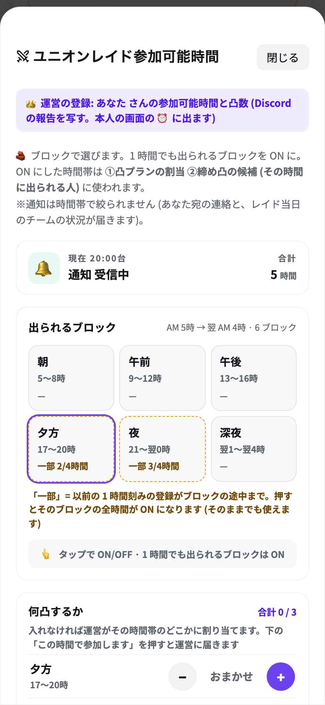
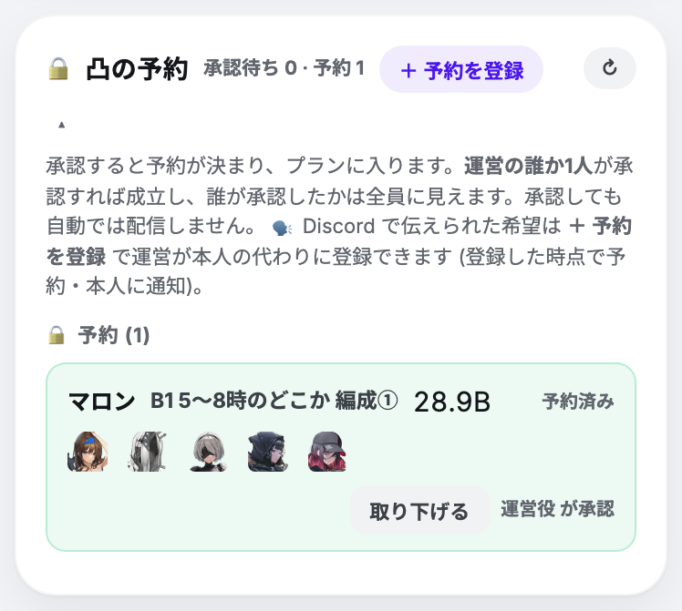
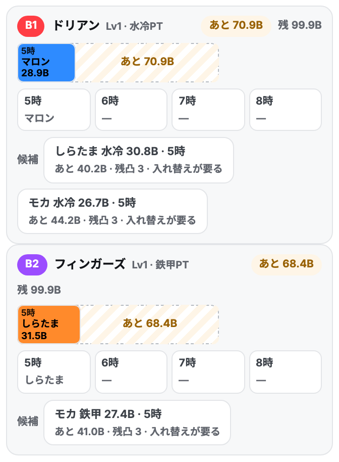
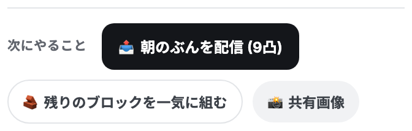
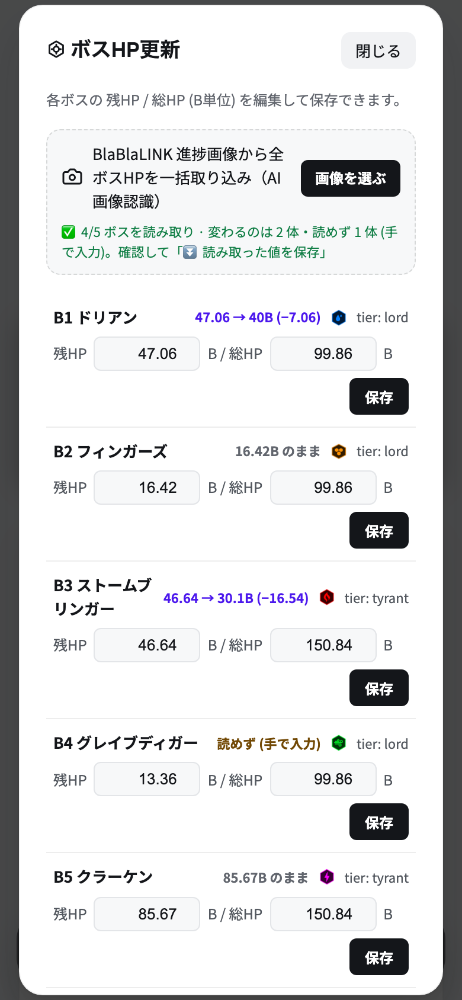
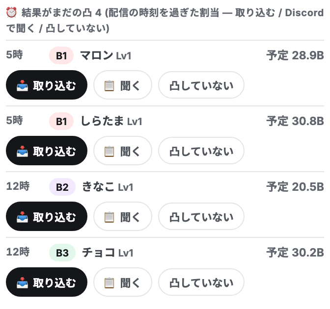
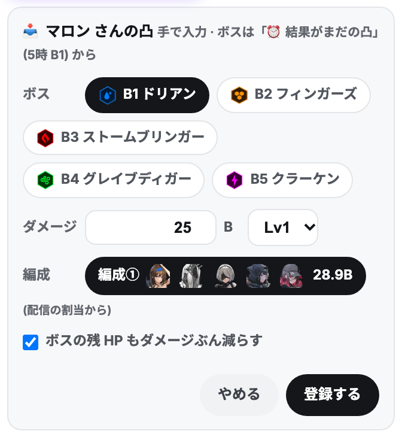
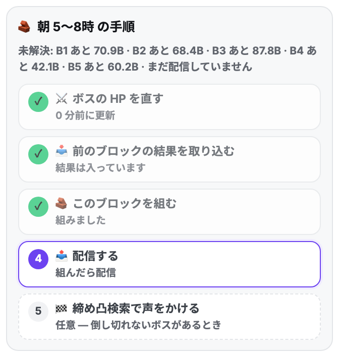

メンバーは Discord に書くだけ。PAD への登録はぜんぶ運営が行う。運営タブを開くと、いちばん上の「いちばん先に」が次にやることを 1 つ出す (交代したらそこから)。
👥 メンバー状況の行の ⏰ (📸 の「時間を登録」でも)。本人のシートと同じ部品に「👑 運営の登録: ○○ さん」と出る。出られるブロックを ON・凸数を ＋/−・「この時間で参加します」。前回の登録が既定で入っている。報告の無い人は 📣 催促 (文面は「Discord で教えてください」)。時間が無い人は算出の候補に入らない。

👥 › 📸 模擬の取り込み: 「誰の模擬か」→ スクショ (PC は落とす / 貼り付け)。保存先 (編成① / ② / ③) は自動 (同じ編成ならその枠 / 空いている枠の若いほう / 全部埋まっていればダメージの低い枠)。希望が書かれた人は、保存直後の 「🔒 この編成で予約する」 か 🧱 組む › 🔒 凸の予約 › 「＋ 予約を登録」 (誰が → どの編成 → どのブロック)。登録した時点で予約・本人に通知。承認待ちは無い。

🧱 組む › 対象「🧱 ブロックの人」(前日は 朝) → 🧮 この条件で算出 → 🧱 盤で確かめる。足りないボスには候補が出る。手で置くなら 🧩 ピース → 光ったマス (📌 仮置き・本人には見えない)。置けない駒は理由が出る。→ 📤 朝のぶんを配信 → 運営スレに「朝 配信した」。模擬が早くそろえば「残りのブロックを一気に組む」(🔭 予想)。


「いちばん先に」の 🎯 ボス HP を更新する → BlaBlaLINK のボス一覧のスクショを 選ぶ / 落とす / 貼り付け (PC) → 行にいまの値との差分 (読めなかった行は「読めず」) → ⏬ 読み取った値を保存。残 HP が 0 になる保存は撃破として通知が飛ぶ。古い HP のまま組むと無駄凸・取りこぼしが出るので、必ずここから。

⚔️ 戦況 › 📥 結果の取り込み › ⏰ 結果がまだの凸 の「📥 取り込む」→ スクショ (ボス・ダメージ・キャラを読み取る) か ダメージを手で → 登録する (✓ 確認済み・残 HP もダメージぶん減る)。凸していなかった人は「凸していない」(次のブロックで組み直す)。聞くなら「📋 聞く」の文面を Discord へ。


前日と同じ (対象「ブロックの人」= いまのブロック → 算出 → 盤 → 配信 → 運営スレに 1 行)。前に配信した割当は尊重される。配信し直したときは割当が変わった人にだけ通知 (✅ の有無に関わらず・割当が消えた人にも)。
🏁 必要なときだけ: 残りが少ないボスは 締め凸検索 →「いま打つか、待つか」→ 📋 名前と文面をコピー → Discord で声をかける → 盤に置いて 🔒 確定 → 配信。
